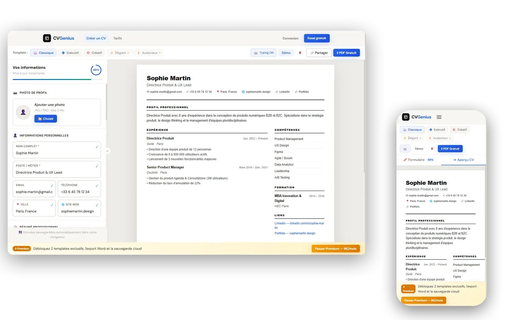

CVGenius
Mon premier vrai SaaS perso. Je préparais mon propre CV pendant mon stage chez Digistylze. J'en ai fait un générateur en ligne. Cinq templates, deux contextes (gratuit / Premium), Stripe pour l'abonnement, Supabase pour les comptes. En ligne, fonctionnel, payant.

L'origine
Stage Digistylze. Pendant que je bossais sur leurs projets, je préparais aussi mon propre CV en parallèle. À force de le refaire, j'ai eu envie d'un outil qui me donnait exactement ce que je voulais : champ à gauche, aperçu temps réel à droite, export PDF en un clic. J'en ai monté la première version perso, puis j'ai eu envie d'aller jusqu'au bout : pourquoi pas un vrai produit, avec compte, paiement, abonnement.
Ce qui fait que ce n'est pas qu'un side project
Trois choses : c'est en ligne (cvgenius-pro.vercel.app), un utilisateur peut vraiment créer un compte (Supabase), et vraiment payer (Stripe Checkout, mode subscription). Sans ça, j'aurais un MVP. Avec ça, j'ai un produit. La différence pour un recruteur, c'est que j'ai touché à toute la pile : front React, auth, base de données, paiement, déploiement, SEO.
Côté technique
Front en React + Vite + React Router DOM. Génération PDF via html2pdf.js (html2canvas sous le capot, avec allowTaint et useCORS activés pour que les photos de profil passent dans le canvas). Détail signature de l'app : un effet machine à écrire lettre par lettre dans l'aperçu. Chaque champ du formulaire déclenche un typing dans le template, ça rend la prévisualisation vivante. Côté serveur : Supabase pour l'auth et le stockage des CV sauvegardés, Stripe pour l'abonnement (fonction serverless Vercel qui crée la session de checkout), déploiement sur Vercel.